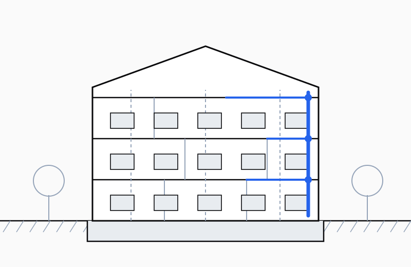

Installatietechniek
Installaties bepalen of een gebouw comfortabel en betaalbaar in gebruik is. Ze vragen ruimte, schachten en tracés, en die zijn het eenvoudigst te reserveren zolang het ontwerp nog niet vastligt.

Concept vóór apparatuur
De vraag is eerst hoeveel warmte, koude en verse lucht een gebouw nodig heeft, en pas daarna welke installatie dat levert. Een goed geïsoleerde schil verkleint de installatie; een matige schil vraagt blijvend om zwaardere apparatuur en hogere energielasten.
Ruimte, schachten en tracés
Kanalen, leidingen en technische ruimtes hebben fysieke maat. Worden ze pas laat ingetekend, dan leidt dat tot verlaagde plafonds, verspringende leidingen of ingrepen in de constructie. Vroeg reserveren voorkomt dat.
Elektra en aansluitingen
Naast klimaat gaat het om verlichting, groepenverdeling, data en aansluitingen voor bijvoorbeeld laadpunten of zonnepanelen. Ook die vragen om ruimte en om een aansluitcapaciteit die tijdig bij de netbeheerder wordt aangevraagd.
Wat u krijgt
- Installatieconcept voor W- en E-installaties
- Ruimtereservering voor schachten en technische ruimtes
- Principeschema's en tracéplattegronden
- Uitgangspunten voor aanbesteding van de installaties
Vraag over installatietechniek?
Leg uw plan even voor.
Vertel kort waar het over gaat en wat de planning is. U krijgt binnen twee werkdagen antwoord.